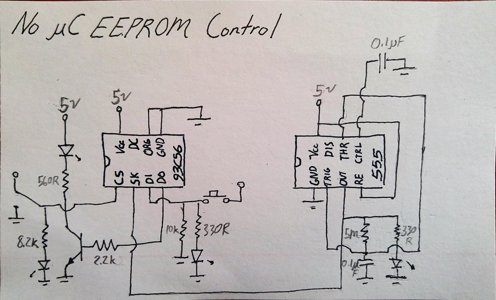

No-Microcontroller EEPROM Reader
A few years ago I desoldered an EEPROM from something I was salvaging parts from. I decided it would be interesting if I could use pushbuttons and LEDs in place of datalines from a microcontroller to control the EEPROM.
I had a button for the Clock Pulse, a button for Data In, a switch for Chip Select and an LED for data out. At first I failed because the pushbuttons created "bounce" which was especially a problem for the clock, where each press would actually trigger dozens of clock cycles. I decided instead to replace the clock button with a 555 timer. I believe a low pass filter would have worked as well, but I didn't try it.
This project was done mostly to demonstrate how chips are interfaced with by microcontrollers, on a very slow time scale. This is obviously not a practical way to read or program an EEPROM!
Essentially the chip checks for a signal on the data in line every time the clock pulses. If it sees a particular sequence of 0s and 1s, it executes different instructions (such as read, write, erase etc), with different parameters (data to write, address to write to).

Note the 5M resistor is just a few 1Ms in series.... I'm still working on more elegant 555 circuits as you can probably imagine :)
Return to Projects© Michael Kafarowski 2018  Built from the ground up!
Built from the ground up!